Current Topics
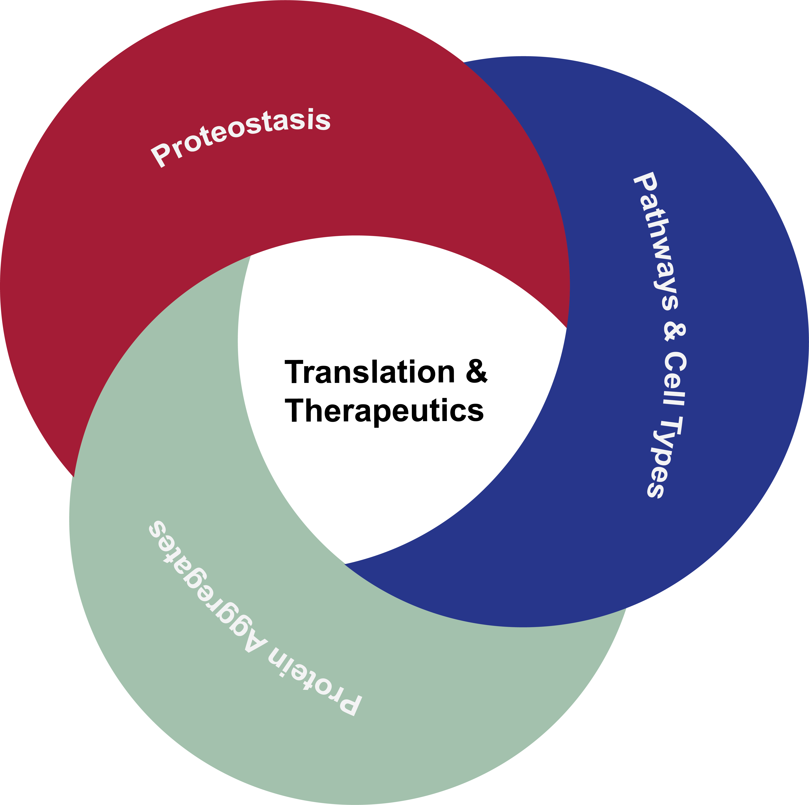
The Ye lab investigates protein degradation in different cell systems and the role of the ubiquitin-proteasome system (UPS) in cell stress. We are particularly interested in how these systems become altered or compromised in neurodegenerative disorders such as Alzheimer's and Parkinson's disease. We investigate these systems through four complementary strands: the spatiotemporal response of proteasomes and autophagy-lysosomal systems to cell stress, including the emerging biology of proteasome condensation; the molecular basis for why the same misfolded protein produces different toxic and inflammatory outcomes in different diseases; the pathway- and cell-type-specific determinants of aggregate clearance; and the translation of these mechanistic insights into diagnostic and therapeutic tools. We address these strands using a multi-disciplinary toolkit: single-molecule and super-resolution imaging to visualise proteasome dynamics and aggregate structure in live and fixed cells; aggregate extraction from post-mortem brain and clinical samples using brain-soak and sarkosyl fractionation; mass spectrometry proteomics to profile proteasome composition and pathway activity; enzyme kinetics to characterise proteasome subunit function; deep-learning and computational image analysis for aggregate classification; and iPSC-based cellular models of tauopathy and alpha-synucleinopathy generated via CRISPR genetic editing.
Plain English
Our lab works on uncovering the events that occur within and between cells found in the human brain and how these cellular communications may behave abnormally in dementia and neurodegenerative disorders such as Alzheimer’s and Parkinson’s disease (AD and PD, respectively). A major component of all our cells are proteins, which are responsible for catalysing reactions, provide scaffolding for e.g. changes in cellular structures and to maintain the cell in a healthy state.
Proteins that become obsolete or dysfunctional are removed by molecular machines called “proteasomes”, which recycle proteins back into their chemical components. Some obsolete proteins are ‘sticky’ in nature and if left unchecked, they tend to stick together and accumulate to form toxic agents that harm cells, a process known as “protein aggregation”. Proteasomes remove these obsolete proteins and are therefore important to prevent the build-up of toxic agents. The consequences of these toxic agents can be dire, causing stress within nerve cells so that normal biological communication cannot occur and eventually result in their death, known as “neurodegeneration”. Therefore, understanding the function of proteasomes is important in regulating biological processes through changing the level of proteins involved in these processes.
Current Research Interests
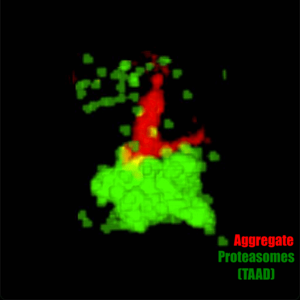
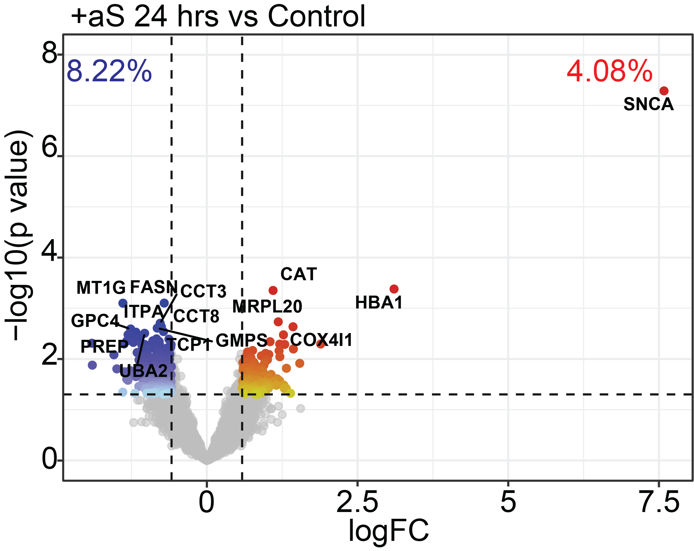
Proteostasis and the ubiquitin-proteasome system under cell stress
How do cells maintain protein quality control, and what happens when that system is overwhelmed by damaged or aggregated proteins? We have shown that proteasomes physically reorganise under proteotoxic stress — slowing, clustering, and phase-separating into condensates ("transient aggregate-associated droplets", or TAADs) that concentrate degradation activity where it is needed. This places our work within the broader biology of biomolecular condensates and phase separation, an increasingly important mechanism in cell stress responses whose physical principles and biological consequences are still poorly understood. Our current research focus is on what triggers and reverses the transition into these condensates, and whether stabilising them could enhance aggregate clearance.
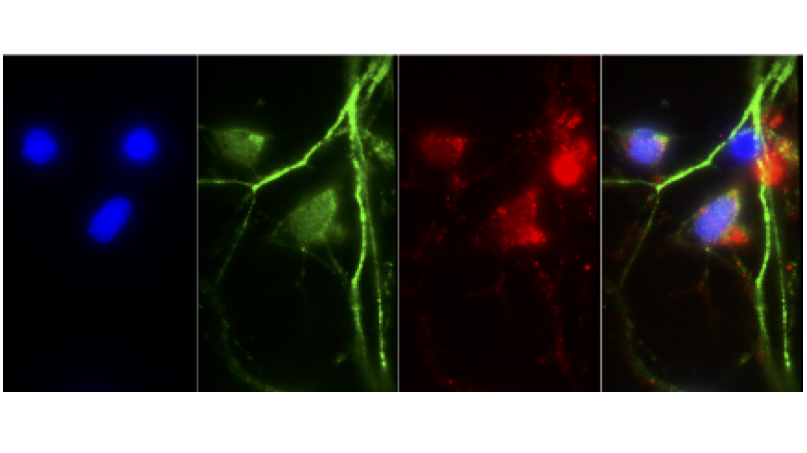
Pathway and cell-type determinants of aggregate clearance
Which degradation route — the ubiquitin-proteasome system or the autophagy-lysosome pathway — handles a given aggregate, how much capacity does each pathway have, and does this differ by cell type? We hypothesise that the two pathways do not simply target aggregates based on their size, but instead play specific roles in aggregate clearance and in regulating proteostasis during cell stress. Our current research focus is on testing this through comparative clearance-capacity profiling in iPSC-derived neurons and glial cell types, and whether aggregate clearance pathway is cell type-dependent.
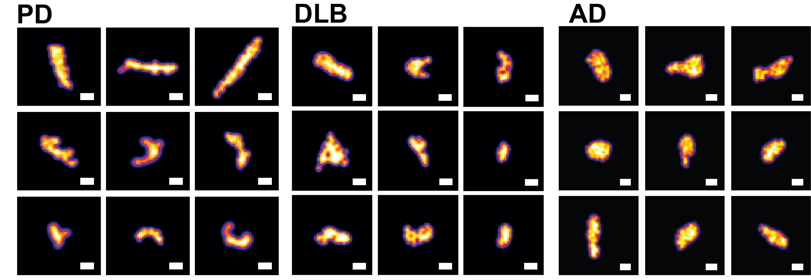
Molecular basis of aggregate toxicity and disease heterogeneity
Why does the same misfolded protein produce distinct toxic and inflammatory outcomes in different diseases, and can that heterogeneity be read out diagnostically? We use quantitative super-resolution imaging and mass spectrometry proteomics to examine heterogeneity in protein aggregates of pathological origin (patent WO2024069193). Our current research focus is on extending this analysis across a broader range of synucleinopathies and tauopathies, drawing on a growing bank of over 300 donor and clinical samples, through profiling of toxicity and inflammatory responses.
Translating mechanism into diagnostics and therapeutic targets
How can our research benefit those affected by disease, and society more broadly? We prioritise research that can translate these mechanistic insights into diagnostic and prognostic tools, and that uses pathway- and cell-type-specific vulnerability profiling to nominate degradation-pathway components as candidate therapeutic targets. We have developed a platform to examine the effect of targeting causal disease genes using novel therapeutic modalities, providing a quantitative readout of efficacy. On the diagnostics and prognostics front, we have a patented deep-learning-based approach that stratifies disease from the morphology of individual protein aggregates (patent WO2024069193).
Imaging Techniques
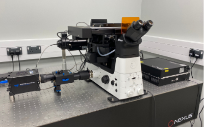
Advanced Microscopy
Our lab has built a fully automated azimuthal- or spinning total-internal reflection fluorescence (TIRF) microscope with 2D and 3D super-resolution imaging capabilities. Both microscopes are fitted with temperature and CO2 control chambers for prolonged live-cell imaging.
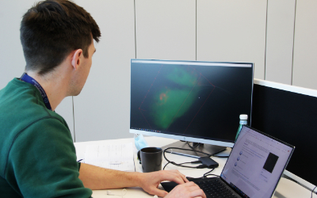
Data Analysis
We have a portfolio of analysis methods which include custom-written codes for single-particle identification and trafficking, protein co-localisation, cell masking and sub pixel aggregate size analysis.
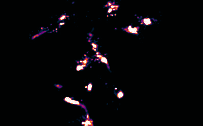
Image Reconstruction
We have recently built on previous methods to reconstruct multicolour super-resolution images in 3D from within cells and tissues.
Experimental Systems
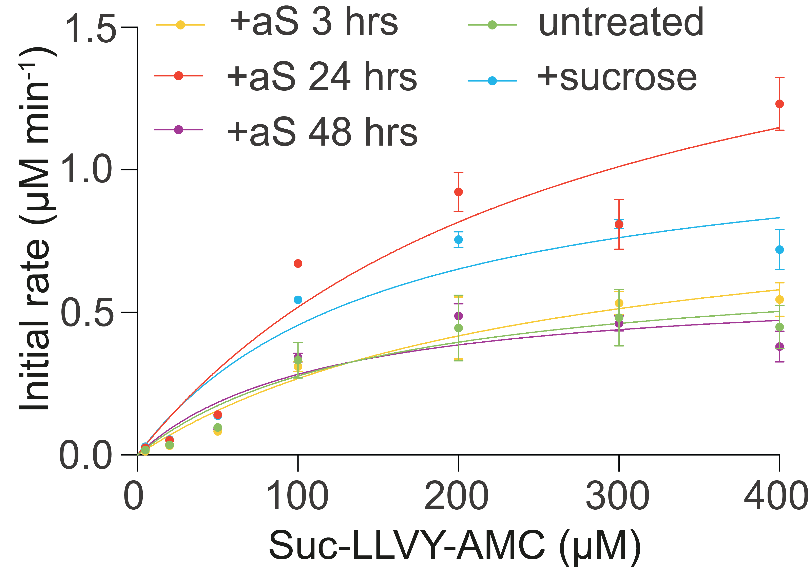
Degradation Kinetics
Proteasome degradation activity is characterised using enzyme kinetics assays with fluorogenic substrates, and autophagy-lysosome pathway activity with pathway-selective inhibitors, alongside flux-inhibition experiments to determine which degradation route clears a given aggregate.
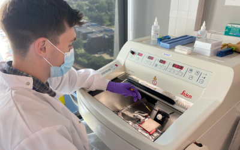
Tissue Samples
Proteins and cellular mechanisms are examined using samples from different donors, drawing on a growing bank of over 300 brain tissue, CSF, and serum samples. Using quantitative SMLM imaging and proteomics alongside canonical biochemical approaches, we examine heterogeneity between different neurodegenerative diseases.
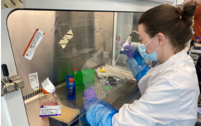
iPSC Cultures
The main disease models used in the lab are patient-derived iPSC lines from tauopathy and alpha-synucleinopathy donors, mainly differentiated into neurons. These are complemented by immortalised cell lines and primary cell cultures, allowing us to validate findings across model systems.
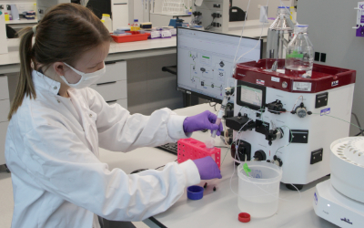
Gene Modification/Protein Biochemistry
Genetic modification techniques are used to edit the genome and modulate gene expression, investigating the function of specific UPS and ALP genes in cellular systems. Our protein biochemistry infrastructure is supported by two ÄKTA FPLC systems, in addition to large shaking incubators, high-speed centrifuges, and ultracentrifuges.